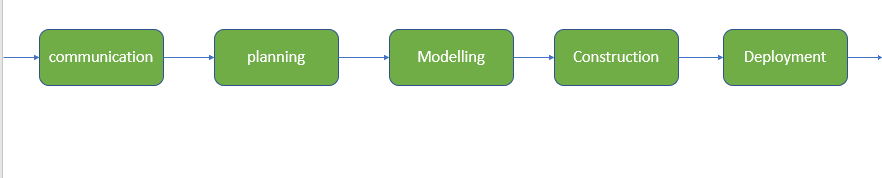

Layered Technology in Software Engineering
Software engineering is a fully layered technology, where development progresses from one layer to another. Each layer is interconnected, and the fulfillment of one layer is necessary for the next.

Fig: The diagram shows the layers of software development
1. A Quality Focus
It defines the continuous process improvement principles of software. It provides integrity that means providing security to the software so that data can be accessed by only an authorized person, no outsider can access the data. It also focuses on maintainability and usability.
2. Process
It is the foundation or base layer of software engineering. It is key that binds all the layers together which enables the development of software before the deadline or on time. Process defines a framework that must be established for the effective delivery of software engineering technology. The software process covers all the activities, actions, and tasks required to be carried out for software development.
 Process activities are listed below:-- Communication: It is the first and foremost thing for the development of software. Communication is necessary to know the actual demand of the client.
- Planning: It basically means drawing a map for reduced the complication of development.
- Modeling: In this process, a model is created according to the client for better understanding.
- Construction: It includes the coding and testing of the problem.
- Deployment: It includes the delivery of software to the client for evaluation and feedback.
3. Method
During the process of software development the answers to all “how-to-do” questions are given by method. It has the information of all the tasks which includes communication, requirement analysis, design modeling, program construction, testing, and support.
4. Tools
Software engineering tools provide a self-operating system for processes and methods. Tools are integrated which means information created by one tool can be used by another.